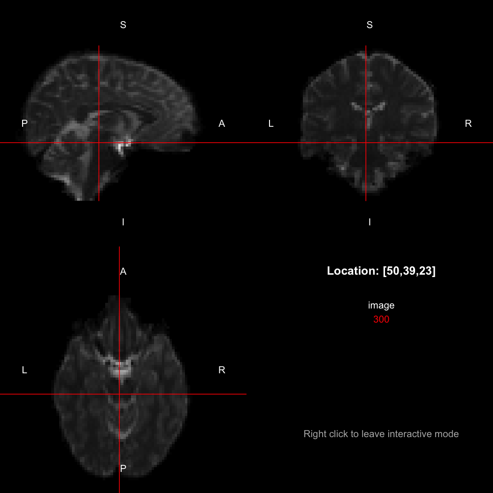
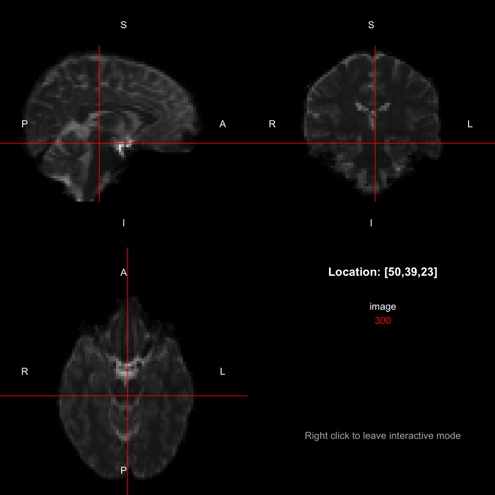
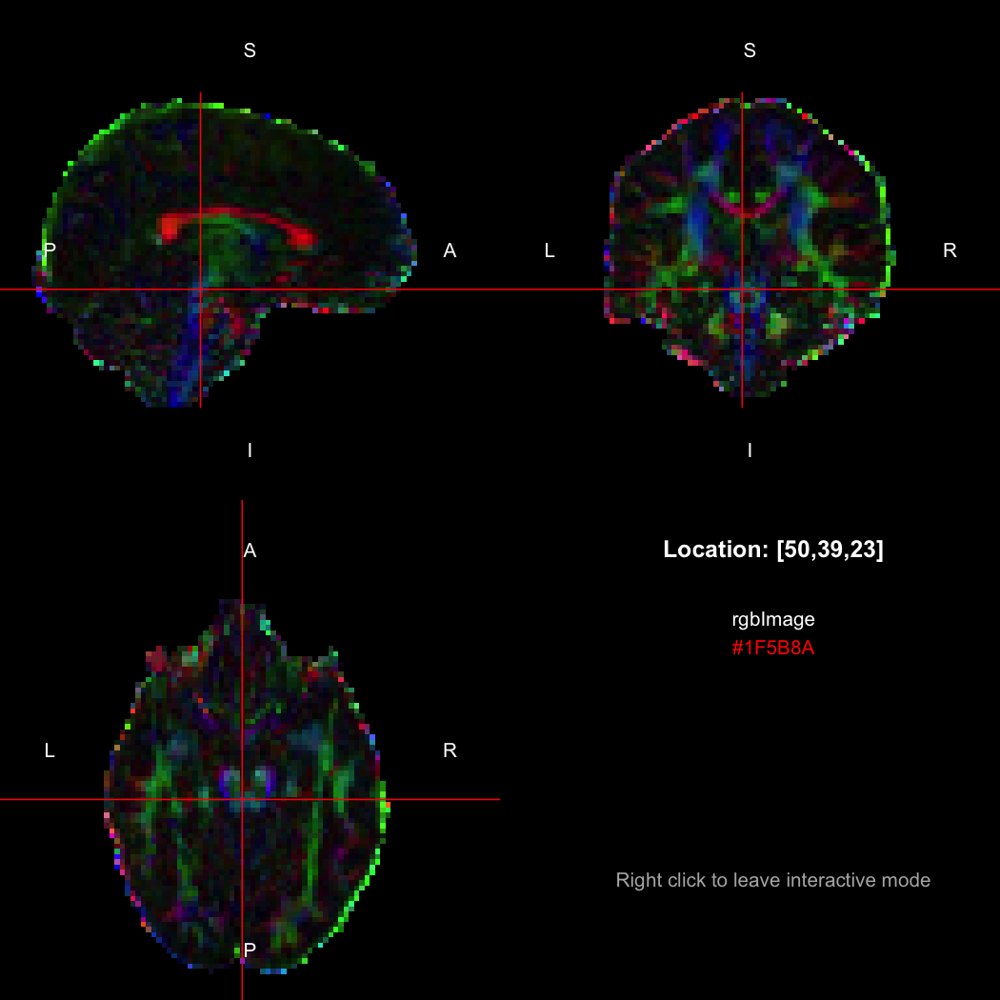

The NIfTI-1 format is a popular file format for storing medical imaging data, widely used in medical research and related fields. Conceptually, a NIfTI-1 file incorporates multidimensional numeric data, like an R array, but with additional metadata describing the real-space resolution of the image, the physical orientation of the image, and how the image should be interpreted.
There are several packages available for reading and writing NIfTI-1 files in R, and these are summarised in the Medical Imaging task view. However, RNifti is distinguished by its
The latest development version of the package can always be installed from GitHub using the remotes package.
Please note that the RNifti package is to be used for research purposes only, and is not a clinical tool. It comes with no warranty.
The primary role of RNifti is in reading and writing NIfTI-1 files, either gzip-compressed or uncompressed, and providing access to image data and metadata. An image may be read into R using the readNifti function.
This image is an R array with some additional attributes containing information such as its dimensions and the size of its pixels (or voxels, in this case, since it is a 3D image). There are auxiliary functions for extracting this information: the standard dim(), plus pixdim() and pixunits().
So this image is of size 96 x 96 x 60 voxels, with each voxel representing 2.5 x 2.5 x 2.5 mm in real space. (The temporal unit, seconds here, only applies to the fourth dimension, if it is present.) Replacement versions of the latter functions are also available, for modifying the metadata.
The package contains a basic image viewer, which can be used interactively or noninteractively to examine 2D or 3D images.

By default, the viewer shows labels indicating image orientation, crosshairs pinpointing the currently selected location, the numerical indices of the current location, and the value of the image at that location. Options allow each of these to be turned off, for the content of the bottom-right panel to be customised entirely, for the colour scale to be changed, and for additional images to be layered on top of the base image. See ?view for details.
A fuller list of the raw metadata stored in the file can be obtained using the niftiHeader function.
niftiHeader(image)
## NIfTI-1 header
## sizeof_hdr: 348
## dim_info: 0
## dim: 3 96 96 60 1 1 1 1
## intent_p1: 0
## intent_p2: 0
## intent_p3: 0
## intent_code: 0 (Unknown)
## datatype: 8 (INT32)
## bitpix: 32
## slice_start: 0
## pixdim: -1.0 2.5 2.5 2.5 0.0 0.0 0.0 0.0
## vox_offset: 352
## scl_slope: 0
## scl_inter: 0
## slice_end: 0
## slice_code: 0 (Unknown)
## xyzt_units: 10
## cal_max: 2503
## cal_min: 0
## slice_duration: 0
## toffset: 0
## descrip: TractoR NIfTI writer v3.0.0
## aux_file:
## qform_code: 2 (Aligned Anat)
## sform_code: 2 (Aligned Anat)
## quatern_b: 0
## quatern_c: 1
## quatern_d: 0
## qoffset_x: 122.0339
## qoffset_y: -95.18523
## qoffset_z: -55.03814
## srow_x: -2.5000 0.0000 0.0000 122.0339
## srow_y: 0.00000 2.50000 0.00000 -95.18523
## srow_z: 0.00000 0.00000 2.50000 -55.03814
## intent_name:
## magic: n+1Advanced users who know the NIfTI format well may want to alter elements of this metadata directly, and this can be performed using the $ operator shorthand, as in
If you need to modify multiple metadata elements at once, or replace metadata wholesale with new information from another image, the asNifti function provides a more efficient interface. See ?asNifti for details.
An image can be written back to NIfTI-1 format using the writeNifti function. gzip compression will be used if the specified file name ends with “.gz”.
The NIfTI-1 format has a mechanism for indicating the physical orientation and location of the image volume in real space. The reference orientation has the left–right direction aligned with the x-axis, the posterior–anterior (back–front) direction aligned with the y-axis, and the inferior–superior (bottom–top) direction aligned with the z-axis; but “xform” information stored with an image can describe a transformation from that coordinate system to the one used by that particular image, in the form of an affine matrix. To obtain the full xform matrix for an image, call the xform function:
xform(image)
## [,1] [,2] [,3] [,4]
## [1,] -2.5 0.0 0.0 122.03390
## [2,] 0.0 2.5 0.0 -95.18523
## [3,] 0.0 0.0 2.5 -55.03814
## [4,] 0.0 0.0 0.0 1.00000
## attr(,"code")
## [1] 2Just the rotation with respect to the canonical axes can be obtained with the rotation function:
In this case, the image is flipped along the x-axis relative to the canonical axes, so the positive x-direction points towards the left rather than the right. This is compactly represented by the output of the orientation function, which indicates the approximate real-world directions of the positive axes in each dimension.
So, here, “LAS” means that the positive x-axis points left, the positive y-axis anterior and the positive z-axis superior. This is the so-called “radiological” orientation convention, and can be requested when viewing images for those who are used to it:

Notice the left (L) and right (R) labels, relative to the view shown above. Setting the radiologicalView option to TRUE will make this the default for all future views.
There is a replacement version of the orientation function, which will reorient the image to align with the requested directions. This is a relatively complex operation, affecting the xform and the storage order of the data.
image[50,39,23]
## [1] 300
orientation(image) <- "RAS"
xform(image)
## [,1] [,2] [,3] [,4]
## [1,] 2.5 0.0 0.0 -115.46609
## [2,] 0.0 2.5 0.0 -95.18523
## [3,] 0.0 0.0 2.5 -55.03814
## [4,] 0.0 0.0 0.0 1.00000
## attr(,"code")
## [1] 2
image[50,39,23]
## [1] 310
image[47,39,23]
## [1] 300Notice that the sign of the top-left element of the xform has now flipped, and the value of the image at location (50,39,23) has changed because the data has been reordered. The equivalent x-location is now 47, which is the 50th element counting in the other direction (96 - 50 + 1 = 47).
This latter operation can be useful to ensure that indexing into several images with different native storage conventions will end up always having approximately the same meaning (and it is performed internally by the viewer, if required). It is non-destructive, because no interpolation of the data is performed. This means that the axes will not exactly align with the requested directions if the original image was oblique to the canonical axes, but conversely it ensures that no degradation in the image will result. (The RNiftyReg package can be used to apply an arbitrary rotation to an image and interpolate the data onto the new grid, if required.)
The NIfTI-1 standard supports composite types such as complex-valued and RGB images, and support for these was added in version 1.0.0 of this package. Complex data is exposed to R using the standard complex vector type:
image <- readNifti(system.file("extdata", "example.nii.gz", package="RNifti"))
complexImage <- asNifti(image + 0i)
print(complexImage)
## Image array of mode "complex" (8.4 Mb)
## - 96 x 96 x 60 voxels
## - 2.5 x 2.5 x 2.5 mm per voxel
complexImage[50,39,23]
## [1] 300+0iR’s native representation for RGB values is CSS-style hex strings of character mode, which are reasonably space-efficient (8 or 10 bytes per value) but a little clunky to work with. For efficiency of interchange between R and the NIfTI-internal datatypes, RNifti uses a byte-packed representation of integer mode instead, which takes up 4 bytes per value. Of course, the viewer understands this format.
rgbImage <- readNifti(system.file("extdata", "example_rgb.nii.gz", package="RNifti"))
print(rgbImage)
## Image array of mode "integer" (2.1 Mb)
## - 96 x 96 x 60 voxels
## - 2.5 x 2.5 x 2.5 mm per voxel
class(rgbImage)
## [1] "niftiImage" "rgbArray" "array"
view(rgbImage)
Notice that values are shown in the viewer using R’s conventional hex string format, but the data is of class rgbArray. The function of the same name can be used to create these arrays from strings or channel values, for the purposes of building RGB images from data, while the as.character method and channels function perform the opposite conversions.
as.character(rgbImage, flatten=FALSE)[50,39,23]
## [1] "#1F5B8A"
channels(rgbImage, "red")[50,39,23,1]
## red
## 31RGB images with an alpha (opacity) channel are also supported.
The RNifti package uses the robust NIfTI-1 reference implementation, which is written in C, to read and write NIfTI files. It also uses the standard NIfTI-1 data structure as its canonical representation of an image in memory. Together, these make the package extremely fast, as the following benchmark against packages AnalyzeFMRI, ANTsRCore, neuroim, oro.nifti and tractor.base shows.
installed.packages()[c("AnalyzeFMRI","ANTsRCore","neuroim","oro.nifti","RNifti",
"tractor.base"), "Version"]
## AnalyzeFMRI ANTsRCore neuroim oro.nifti RNifti tractor.base
## "1.1-21" "0.7.3" "0.0.6" "0.9.1" "1.0.0" "3.3.2"
library(microbenchmark)
microbenchmark(AnalyzeFMRI::f.read.volume("example.nii"),
ANTsRCore::antsImageRead("example.nii"),
neuroim::loadVolume("example.nii"),
oro.nifti::readNIfTI("example.nii"),
RNifti::readNifti("example.nii"),
RNifti::readNifti("example.nii", internal=TRUE),
tractor.base::readImageFile("example.nii"), unit="ms")
## Unit: milliseconds
## expr min lq
## AnalyzeFMRI::f.read.volume("example.nii") 10.650034 10.785712
## ANTsRCore::antsImageRead("example.nii") 1.174784 1.553855
## neuroim::loadVolume("example.nii") 16.496942 17.202503
## oro.nifti::readNIfTI("example.nii") 23.323140 26.900033
## RNifti::readNifti("example.nii") 1.309286 1.432574
## RNifti::readNifti("example.nii", internal = TRUE) 0.155987 0.218652
## tractor.base::readImageFile("example.nii") 8.020815 8.512061
## mean median uq max neval
## 12.5975294 10.9189280 11.2826610 142.469529 100
## 12.5234012 1.6563580 1.7609965 1087.252412 100
## 31.0333107 23.2155850 25.1907460 847.043278 100
## 50.4967592 29.4253275 32.0777185 434.736898 100
## 1.6504420 1.5129170 1.7070565 5.564642 100
## 0.3028081 0.2976415 0.3680695 0.768533 100
## 26.8987791 10.4609615 13.3785205 180.474982 100With a median runtime of less than 2 ms, RNifti is typically around ten times as fast as the alternatives to read this image into R. The exception is ANTsRCore, which uses a similar low-level pointer-based arrangement as RNifti, and is therefore comparable in speed. However, ANTsR has substantial dependencies, which may affect its suitability in some applications.
Moreover, when reading the file into an “internal” image, which does not copy the pixel values into R data structures until they are required, the median runtime drops by a further 80%, to just 300 µs. This saves time and memory, while still allowing data access through standard R indexing operations.
The package does not fully duplicate the NIfTI-1 structure’s contents in R-visible objects. Instead, it passes key metadata back to R, such as the image dimensions and pixel dimensions, and it also passes back the pixel values where they are needed. Finally, it creates an external pointer to the native data structure, which is stored in an attribute. This pointer is dereferenced whenever the object is passed back to the C++ code, thereby avoiding unnecessary duplication and ensuring that all metadata remains intact. The full NIfTI-1 header can be obtained using the niftiHeader R function, if it is needed.
This arrangement is efficient and generally works well, but many R operations strip attributes—in which case the external pointer will be removed. The internal structure will be built again when necessary, but using default metadata. In these cases, if it is important to keep the original metadata, the asNifti function should be called explicitly, with a template object. This reconstructs the NIfTI-1 data structure, using the template as a starting point.
It is possible to use the package’s NIfTI-handling code in other R packages’ compiled code, thereby obviating the need to duplicate the reference implementation. Moreover, RNifti provides two key C++ wrapper classes:
NiftiImage, which simplifies memory management and supports the package’s internal image pointers and associated reference counting, andNiftiImageData, which encapsulates the pixel data within an image, and handles datatype multiplexing and data scaling, as well as providing indexing, iterators and other niceties.Full doxygen documentation for these classes is available at http://doxygen.flakery.org/RNifti/, and is also provided with package releases.
A third-party package can use the NiftiImage class by including
LinkingTo: Rcpp, RNiftiin its DESCRIPTION file, and then including the RNifti.h header file. For example,
#include "RNifti.h"
void myfunction ()
{
RNifti::NiftiImage image("example.nii.gz");
// Do something with the image
}If you’re using the sourceCpp function from Rcpp, you may also need to add the attribute line
to the top of your C++ source file.
In addition to the one taking a file path, there are also constructors taking a SEXP (i.e., an R object), another NiftiImage, or a nifti_image structure from the reference implementation. NiftiImage objects can be implicitly cast to pointers to nifti_image structs, meaning that they can be directly used in calls to the reference implementation’s own API. The latter is accessed through the separate RNiftiAPI.h header file.
#include "RNifti.h"
#include "RNiftiAPI.h"
void myfunction (SEXP image_)
{
RNifti::NiftiImage image(image_);
const size_t volsize = nifti_get_volsize(image);
}(RNifti will also have to be added to the Imports list in the package’s DESCRIPTION file, as well as LinkingTo.) The RNiftiAPI.h header should only be included once per package, since it contains function implementations. Multiple includes will lead to duplicate symbol warnings from your linker. Therefore, if multiple source files require access to the NIfTI-1 reference implementation, it is recommended that the API header be included alone in a separate “.c” or “.cpp” file, while others only include the main RNifti.h.
RNifti is not specifically designed to be thread-safe, and R itself is expressly single-threaded. However, some effort has been made to try to minimise problems associated with parallelisation, such as putting R API calls within a critical region if OpenMP is being used. If you are using the API in a package that does use OpenMP or another form of threads, it is wise to preregister the functions exported by RNifti before use, by calling niftilib_register_all(). In single-threaded contexts this is optional, and will be performed when required.
Thanks to contributions from Matt Hall, it is possible (as of package version 0.7.0) to use the NiftiImage C++ class in standalone C++ projects. The standalone directory provides a minimal example, and its contents can be copied to a new directory (including symlinked files) as a new project template.
The NIfTI-2 format is an evolution of the far more widely-used NIfTI-1. It primarily uses wider types for various fields, to support large datasets and improve precision.
Unfortunately, the NIfTI-1 version of the reference library is not forwards-compatible with NIfTI-2, and does not recognise NIfTI-2 files as valid, while the NIfTI-2 version changes the definition of the nifti_image data structure, and hence the return type of several core functions, rendering it potentially incompatible with software written for the original library. As a result, adding full NIfTI-2 support to RNifti without breaking existing code is not straightforward. Nevertheless, as of RNifti version 0.8.0, R function niftiVersion() and C++ static method NiftiImage::fileVersion() offer a forwards-compatible way to determine the version of the format used by a particular file, so that calling functions can take action accordingly.